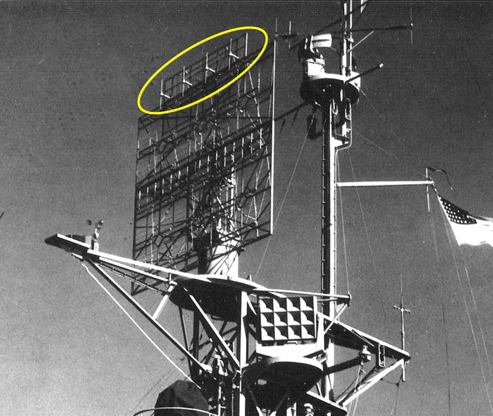
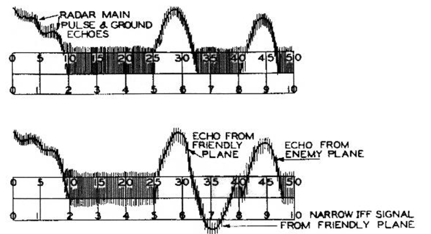
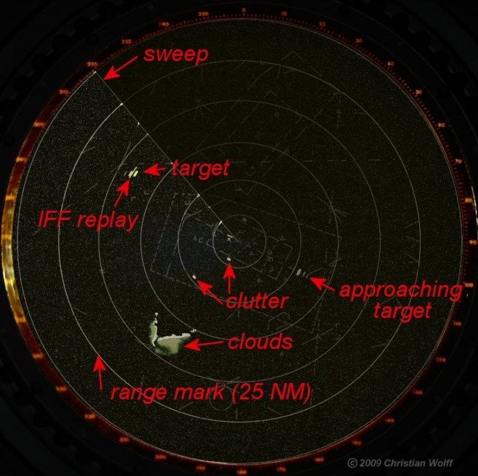
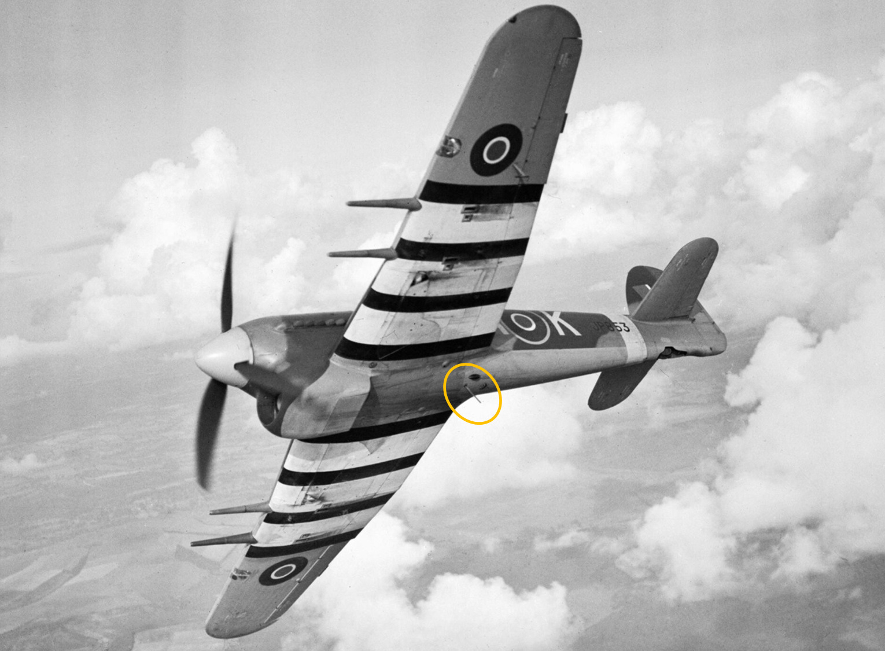
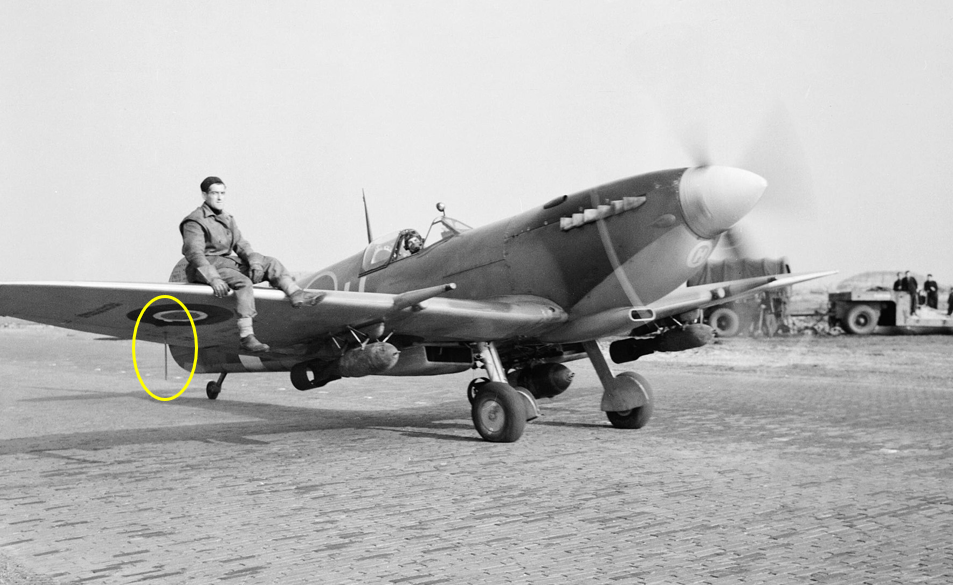
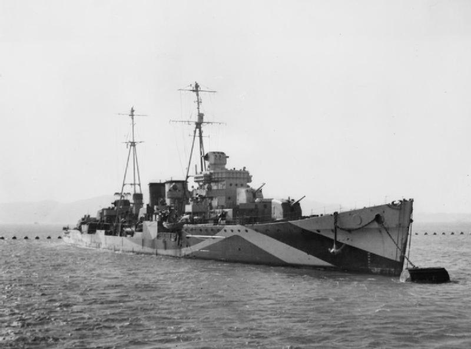

WW2의 IFF 이야기 (5) - 이렇게 편할 수가!
게시: 2024-12-19T06:30:04+09:00
IFF Mark I이나 II나, 공통점은 레이더의 탐색 전파에 반응하여 증폭 신호를 반송한다는 것. 레이더 전파가 수평 편광(horizontal polarization)이다 보니 항공기에 붙여야 하는 안테나도 수평이어야 했고, 그러다보니 항공기 양쪽 측면에 안테나를 배치해야 했는데도, 항공기가 어느 방향으로 비행하느냐에 따라 IFF 신호를 제대로 반송하지 못했음. 결과적으로 레이더의 수평 편광이 모든 문제의 원인인 것 같지만 실은 더 근본적으로 생각해보면 아님. 진짜 문제의 원인은 레이더의 탐색 전파에 반응한다는 것이었음. 실은 1940년에 Frederic C. Williams라는 영국 엔지니어가 '앞으로 레이더의 탐색 전파 주파수가 더 높은 것으로 바뀔 수도 있는데, 그렇게 가변적인 주파수에 일일이 반응할 것이 아니라 아예 IFF용 주파수를 따로 만드는 것이 더 낫지 않겠어요?' 라고 선구자적인 제안을 한 바 있었음. 그러나 당장 모든 월급장이들은 오대수, 즉 '오늘만 대충 수습하자'라는 정신의 소유자인지라, 일단 받은 숙제를 IFF Mark I, 그리고 Mark II로 해냈는데 그걸 굳이 처음부터 다시 하고 싶지 않았음. 그렇게 윌리엄스의 아이디어는 '일을 줄이지는 못할 망정 쓸데 없이 더 만들어낸다'라는 동료들의 다구리만 맞고 묻혀버렸음. 그렇게 전기 모터로 움직이는 cam 장치를 통해 몇 초당 한 번씩 감지 주파수를 바꿔가며 여러가지 레이더의 여러가지 주파수에 증폭 신호를 반송하던 IFF Mark II의 문제점을 고스란히 드러낸 것은 cavity magnetron. 마침내 캐버티 마그네트론의 GHz 단위의 초고주파 전파를 사용하는 레이더가 나오자, MHz 단위의 전파에 반응하던 기존 IFF Mark II에서는 도저히 하나의 회로로 MHz와 GHz 모두에게 돌아가며 반응할 수가 없게 됨. 결국 땜질 방식으로 개선되어 오던 IFF를 처음부터 다시 만들어야 하는 순간이 된 것. 그렇게 되자 자연스럽게 몇 년 전 자신들이 타박하며 묻어버렸던 윌리엄스의 아이디어, 즉 별도의 IFF 전용 주파수를 정하고, 앞으로는 레이더가 무슨 주파수의 전파를 쏘아대던 간에 IFF는 한가지 대여폭(157 to 187 MHz)의 주파수에 대해서만 반응하는 방식을 채용하게 됨. 문제는 이제 레이더의 전파가 아니라 별도의 IFF 전파를 추가로, 그것도 레이더 전파와 정확하게 동기화 하여 동시에 쏘아야 한다는 것. 이를 위해서 모든 레이더에는 interrogator (심문자)라는 추가적인 전파 발신 장치가 달리게 됨. 인테로게이터 안테나는 레이더의 안테나 프레임의 위쪽에 별도의 송신 element, 그러니까 대략 4개 정도의 dipole (쌍극자)을 배치한 형태로 배치되었는데, 여기에는 레이더의 탐색 전파가 송신될 때 그 신호 일부가 동시에 interrogator에 전송되어 인테로게이터에서도 IFF 심문 전파를 쏘도록 했음. 이건 마치 레이더에 보조 레이더가 달린 것 같은 모양새였으므로 IFF 전파 송신기에는 secondary radar, 즉 보조 레이더라는 명칭이 붙었는데, 이는 현대에서도 사용되는 용어라고 함.

(Casablanca급 호위항모 USS Kasaan Bay (CVE-69, 1만1천톤, 19노트)에 설치된, 6 x 6 쌍극자가 가로로 늘어선 저 SK-1 레이더 안테나 프레임 위에 별도로 4개의 쌍극자가 별도의 작은 사각 프레임에 배치된 것이 보이는데, 그게 바로 IFF 송수신 장치. 그런데 자세히 보면 저 4개의 쌍극자는 가로가 아니라 세로로 배치된 것을 알 수 있음.)
또한 별도의 IFF 전파를 사용하니 좋은 점이 있었음. 기존 Mark II에서는 IFF 신호 때문에 아군기 바로 뒤에 따라오는 적기의 신호가 가려지는 문제가 발생했었음. 그러나 완전 별도의 IFF를 사용하니 그 신호는 완전히 다른 패턴, 가령 위로 치솟는 신호가 아니라 아래로 푹 꺼지는 신호로 A-scope에 표시할 수 있게 된 것.

(위 그림은 IFF 없을 때 보이는 A-scope에서의 신호. 아래 그림은 IFF Mark III를 달았을 때 보이는 아군기의 신호. 아군기의 신호 바로 뒤에 위가 아니라 아래로 푹 꺼지는 패턴이 보이게 되므로, 그 바로 뒤에 따라오는 항공기의 반사파가 가려지는 일은 없게 됨)

(A-scope 말고 더 편리한 PPI scope에서의 IFF의 모습. 10시 방향의 target 뒤쪽에 막대기 같은 것이 보이는데 그게 아군기라는 IFF 표시.) 그런데 여기서 작지만 획기적인 발상의 전환이 적용됨. 바로 전파의 polarization (편광). 레이더는 지면 또는 해면과의 반응이나 비행기의 날개 방향 때문에 수평 편광된 전파를 쏘았고, 그래서 레이더 안테나의 쌍극자들은 모두 가로로 배치됨. 그것 때문에 항공기에서도 가로로 IFF 안테나를 배치해야 했고, 그래서 많은 비효율적 요소가 있었던 것. 그런데 이제 레이더 전파에 반응하는 것이 아니라, 별도의 IFF 전파에 반응하면 되니까, 그 IFF 전파를 굳이 수평 편광시킬 이유가 없어진 것. 그래서 IFF의 쌍극자들은 모두 세로로 배치. 그러면 당연히 항공기의 IFF 안테나도 모두 세로로 배치하게 됨.

(Hawker Typhoon 전투기의 동체 아래에 수직으로 튀어나온 IFF 안테나)

(Spitfire에서는 오른쪽 날개 아래에 수직 IFF 안테나를 달았음.) 세상에나 세상에나! IFF 안테나를 세로로 배치하니까 이렇게 편할 수가 없었음. IFF 전파는 지상이나 해상에서 날아오므로, 항공기의 IFF는 아래 쪽에서 잘 보이는 위치에 배치해야 했는데, 세로로 배치하려니 그냥 동체 아래나 날개 아래에 세로로 삐죽 튀어나온 가느다란 쇠막대기 하나를 꽂음으로써 모든 것이 해결됨. 심지어 IFF Mark II가 제대로 작동하지 않았던 문제도 한꺼번에 해결됨. 원래 전파는 안테나에 수직으로 와 닿아야 수신 감도가 좋았는데, 기존 Mark II는 가로로 놓아야 하다보니, 비행기가 어느 방향으로 기수를 돌리냐에 따라, 동체에서 수평 꼬리날개 끝부분으로 비스듬히 연결된 안테나가 레이더 전파에 제대로 반응하지 못하는 경우가 많았음. 그런데 동체 아래에 수직으로 튀어나온 안테나를 달아보니, 그야말로 모든 방향에 다 제대로 반응을 하는 omni-directional 안테나가 됨. 물론 바로 레이더 머리 위에 있는 항공기의 수직 IFF 안테나는 IFF 신호에 제대로 반응하지 못했겠으나, 어차피 그 정도 거리면 눈으로 다 보이니 어차피 상관 없게 됨. 영국이 만든 이 IFF Mark III는 미국에서는 SCR-595라는 제식명이 붙어서 널리 보급됨. 연합군끼리는 서로 알아봐야 하니 그거야말로 아낌없이 전수해줘야 할 기술이었던 것. 이건 1943년부터 본격적으로 보급되기 시작하여, 심지어 합동 작전을 할 일이 거의 없었던 소련에게도 500 세트 정도가 공급됨. 문제는 Mark II에서 Mark III로의 전환. 1943년 9월, 이탈리아 서해안 Salerno 상륙하는 작전이었던 Operation Avalanche에 동원된 로열 네이비의 Danae급 대공 순양함 HMS Delhi는 무려 Mark I, Mark II, Mark IIG, Mark IIN 뿐만 아니라 Mark III, 총 5가지 IFF 신호를 처리해야 했음. 그 뿐이면 양반이었고, 거기에 더해 아예 아무런 IFF 장비를 갖추지 않은 아군기 숫자도 적지 않아서 대체 어느 것이 적기인지 정말 힘들었다고. 아무튼 IFF Mark III는 매우 성공적이서, 이 시스템은 거의 50년대 중반까지도 그대로 사용될 정도.

(다나이(Danae)급 경순양함 HMS Delhi (5천톤, 29노트). 원래 1918년 진수된 꽤 낡은 순양함이었는데, 1941년 미국에서 대공 순양함으로 개조되어 기존의 6인치 주포 6문을 떼어내고 미해군 구축함에 장착할 예정이었던 5인치 양용포 5문과 함께 40mm Bofors 대공포와 20mm Oerlikon 대공포를 잔뜩 장착함. 특히 델리에는 레이더로 대공포들을 통제하는 MK 37 Gun Fire Control System이 장착되어 매우 우수한 대공 방어를 수행. 위 사진은 1941년 개조 이후의 모습.)